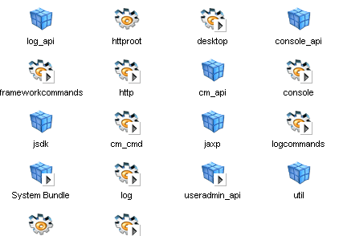
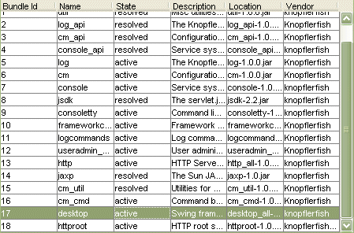
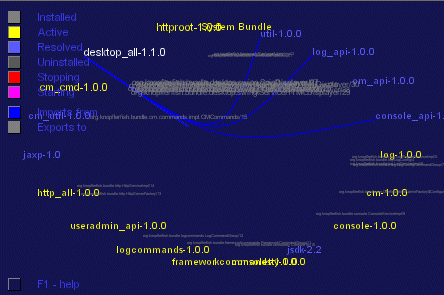
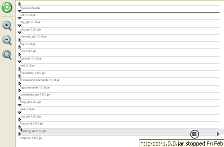

The Knopflerfish Desktop
{kind=link}
The Knopflerfish OSGi Desktop displays a graphical overview of the OSGi framework. Most common operations as install, start, stop and update can be performed on bundles using the desktop. Additionally, bundle and service detail information is shown, and an experimental "Save deploy archive" is included.
Additionally, the HTTP console or the Telnet console bundle can always be used for remote control. Both are available in the KF bundle repository.
The desktop can be customized using plugin services, see SwingBundleDisplayer for details.
The Desktop bundle can be found in
knopflerfish/osgi/bundles/desktop
When started, it creates a window with four main areas:
- Toolbar
- The top toolbar provides quick access to common operations as start/stop/update bundles.
- Bundle view
- The center bundle view area display all installed bundles and their states. By clicking on bundles in this are, detail information is displayed in the Bundle detail area Four different views a supported internally (new can be installed):
- Bundle detail area
- The rightmost bundle detail area shows detailed
information on selected bundles such as:
- manifest
- bundle closure
- imported/exported services
- imported/exported packages
- bundle logs.
- Framework console
- The bottom console area allows interaction with the text console. This console acts exactly as the consoltty bundle, but does not require a shell or DOS window to run.
Icon view
To view the installed bundles as icons, selectView -> Large Icons
| Bundle which has a BundleActivator | |
| Active bundle | |
 |
"Library" bundle which has no BundleActivator |
Bundles can be selected by clicking.
Detail list view
To view the installed bundles as a detailed list, selectView -> Details
Bundles can be selected by clicking.
Detail spin view
To view the installed bundles as graphics, selectView -> Spin
Dependencies between bundles and services are shown as connecting lines. Not how the console bundle depends on three other bundles in the image above.
Bundles can be selected by clicking.
Detail spin view
To view the installed bundles as a time line, selectView -> Time line
Each bundle has a horizontal line, with bundle events marked for each bundle
Bundles can be selected by clicking.